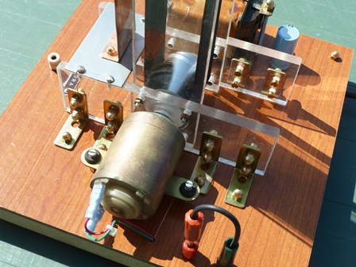
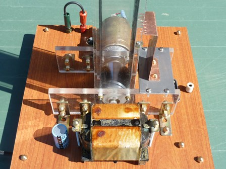
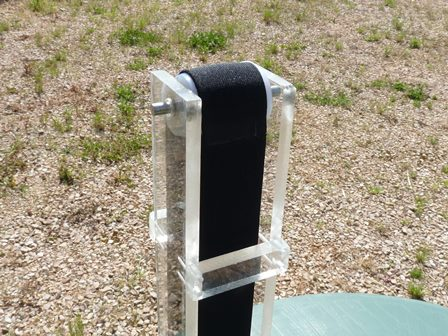
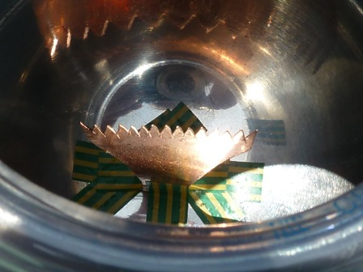

Se è vero che alla fine tutti i nodi vengono al pettine, è arrivato finalmente al pettine anche questo nodo: la costruzione di una macchina Van de Graaff, che avevo in progetto da tempo immemorabile.
Di mister Robert Jemison ho già parlato la volta scorsa; del principio di funzionamento di questo dispositivo non parlerò perchè si trova facilmente in rete tutto quello che si vuole e quindi mi limiterò a descrivere, per così dire, solo l'hardware e le impressioni di funzionamento.
Solo due parole per i più pigri: questa macchina consiste in un motorino che fa girare una cinghia isolante impegnata da due rulli e da una grande sfera metallica cava.
La cinghia strisciando sui rulli si elettrizza e le cariche elettriche vengono trasportate dal movimento della cinghia stessa all'interno della sfera, nella quale si accumulano.
Chi non conosce niente di questa macchina... veda su YT!


Motore e rullo inferiore Trasformatore per il motore


Cinghia e rullo superiore Il pettine interno alla sfera
Premetto subito che (a meno di non fare un modellino scalcagnato) non è una costruzione facile come forse potrebbe sembrare: una buona attrezzatura meccanica e precisione nell'esecuzione sono indispensabili.
Come materiale per tutta la struttura, a parte la base di sostegno, ho usato il plexiglass, che è un materiale esteticamente bello e adatto per lavori in alta tensione ma è schifosamente scomodo da lavorare; tuttavia avevo deciso di usare questo e con questo ho proseguito.
Per i due rulli (quello di trascinamento e quello superiore) mi sono venuti in aiuto due amici col tornio (Guglielmo e Giovanni), senza i quali li avrei realizzati con maggiori difficoltà.
I rulli devono essere di materiali diversi: nel mio caso il rullo di trascinamento inferiore è di nylon rivestito con una boccola di alluminio e quello superiore di solo nylon; quest'ultimo è stato tornito con una forma a botte, per far sì che la cinghia si autocentri durante la rotazione.
I perni dei rulli scorrono su quattro piccoli cuscinetti a sfere e questo impone di evitare anche minimi errori nella coassialità dei fori e nella complanarità dei pezzi; nonostante le maggiori difficoltà di realizzazione consiglio caldamente questo sistema.
Il motore è un ricambio (trovato nuovo ma ad un prezzo simbolico) di un registratore a nastro professionale Lenco, con l'alberino esattamente da 6 mm e lungo quanto basta per passare da parte a parte la base della macchina; funziona in corrente continua a 30 V, e nel mio caso viene sottoalimentato a 24.
L'alimentatore che si vede in foto è formato da un trasformatore a 24 V con ponte di diodi e condensatore; usando alimentatori switching o a regolazione elettronica si corre il fortissimo rischio che si guastino perchè i semiconduttori non reggono i rientri di picchi di alta tensione, che sono inevitabili.
La sfera superiore è costituita da due ciotole semisferiche inox del catalogo Ikea del diametro di 28 cm; ho provato con successo poco inferiore anche quelle più piccole di diametro 20 cm; la tensione d'uscita di una Van de Graaff è proporzionale al diametro della sfera.
Molto approssimativamente si può considerare che:
diametro in mm = tensione in kilovolt
Il pettine inferiore per l'effetto corona è realizzato sagomando a punte un lamierino di rame; è singolare il fatto che il massimo rendimento si ottiene posizionandolo non in corrispondenza del rullo ma spostandolo una decina di cm più in alto, lungo il nastro.
Il pettine di estrazione delle cariche all'interno della sfera consiste in un pezzo di lamierino di rame sagomato a punte, ma può più semplicemente essere costituito da un unico filo sottile (1 mm) e appuntito fissato sul vertice della calotta e scendente fin quasi a toccare il nastro.
La prossima volta concluderò il discorso hardware e vedremo il generatore completo, con i relativi commenti sul funzionamento.
3 commenti